如果有人问，在我的教学生涯中，让我最震撼、印象最深刻的一件事是什么，我会说是人类遗传学。我说的不是那个不堪回首的2010年——我被迫教了一学期十年级的生物课1，而是教师这份工作中最棒的长期福利：了解家庭。
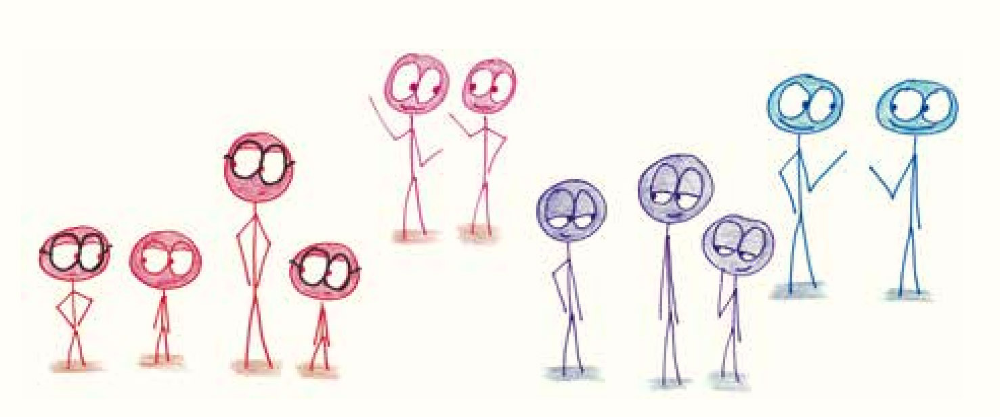
每当你的学生中有一对亲人——亲兄弟姐妹、堂表兄弟姐妹、小姨和同龄的外甥——都会刷新你对生物遗传的随机性的认知。我教过长得像双胞胎的兄弟姐妹，也教过长得像陌生人的双胞胎。家访的夜晚经常让我头脑混乱，每次家访时，我的大脑都会自动对面前的两个成年人启动实时的五官组合程序。我常发现他们的孩子就是一个完美的Photoshop作品：他有着爸爸的耳朵和头发，妈妈的眼睛和头型。所有家庭中，孩子的外貌都是父母的组合，但却没有两个家庭的组合方式完全相同。
特征遗传的谜团就这样一击命中了生物学的核心。2当然，正如我的学生会告诉你的那样，我不是个生物学家。我没有DNA测序仪，也不懂内含子或组蛋白的专业知识，更准确地说，我对遗传学没有任何思路。作为数学家，我手里有的就是一把硬币，一串数学定理，和一个《电器小英雄》（The Brave Little Toaster）式的勇敢信念，我坚信基本原理可以清晰地解释一切。
不过，也许这就够了。
这一章介绍的是概率领域中两个看似风马牛不相及的问题。其一是基因遗传，这可是生物专业研究生都在学的课程；其二是抛硬币，这么鸡毛蒜皮的事儿几乎上不了台面。
这两者能联系起来吗？硬币落地那“叮”的一声，真的足以体现人类基因的复杂性吗？
我可以充满自信地回答：“是的”。另外，我确定这样的自信遗传自我的父亲。
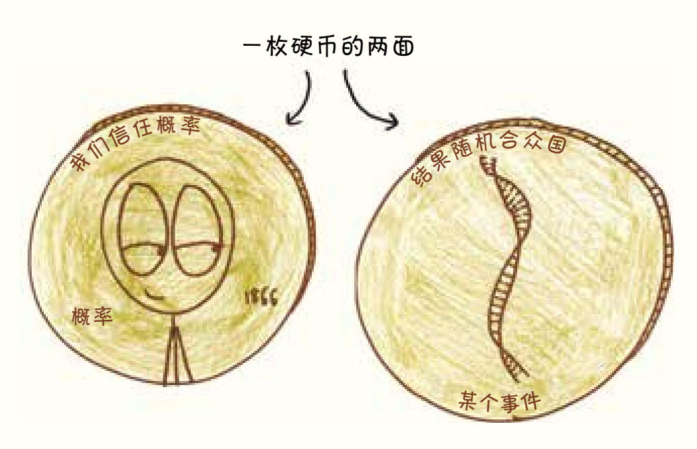
我们先从这两个问题中较简单的开始，请问：抛出一枚硬币后，会发生什么？
答：会得到两种结果，正面朝上和反面朝上，二者发生的概率相等。回答完毕！
嗯，你感受到了吗？将紧迫而棘手的现实世界问题化解为无人问津的小谜题是一种乐趣。尽情享受这种感觉吧，这就是有些人希望成为数学家的原因。
没错，当我们只抛一枚硬币时，不会再有什么更多的变化了。但是如果我们抛的是一对硬币呢？你会发现可能会产生四种等概率的结果：
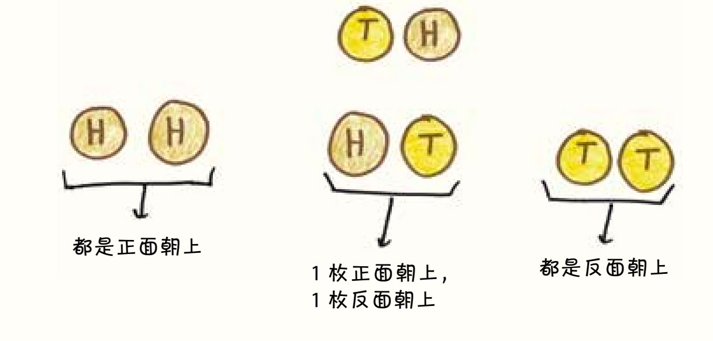
注重细节的人会认为中间两种结果是不同的：先有正面再有反面，或是先有反面再有正面（假如一枚硬币是一便士，另一枚是五便士，确实就不一样了）。但如果你和大多数抛硬币的人一样，就不会在意这个细节，而是把这两个结果都归为“一个正面，一个反面”。那么，这个“一正一反”结果的概率就成了其他结果的两倍。
问题继续：如果我们抛的是三枚硬币呢？
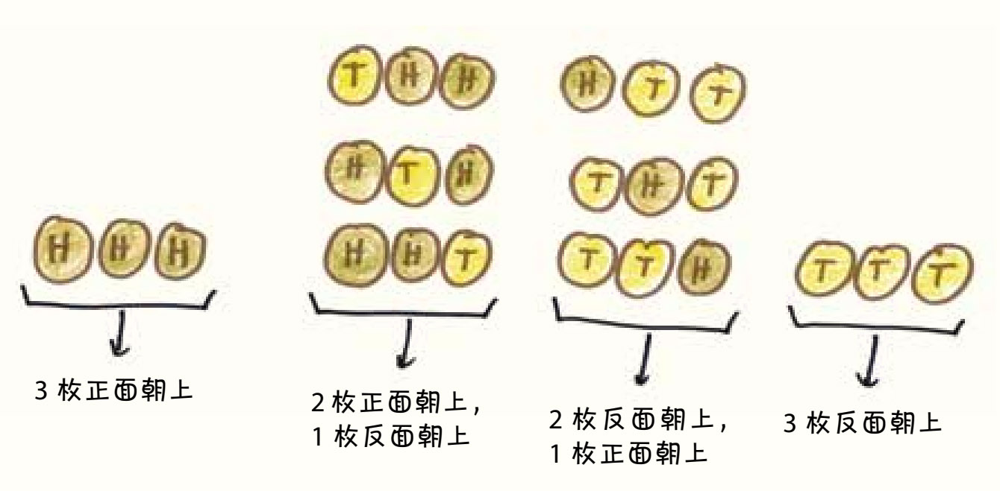
总共会出现八种结果。如果你希望所有硬币都是正面朝上，那么这八种结果中就只有一个是满足你的要求的，所以它的概率是八分之一。但是如果你的目标是两个正面和一个反面，那么有三种结果可以满足你，反面朝上的情况可以出现在第一枚、第二枚或第三枚硬币上，这样的概率是八分之三。
接下来，如果我们抛的是4枚硬币呢？如果是5枚、7枚、90枚呢？
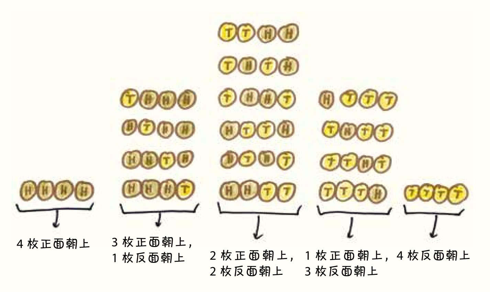
现在我们探讨的问题已经转变成了一组叫作二项分布（binomial distribution）的概率模型。简单地说，选取一个只有两种互相对立的结果的事件（比如正面或反面，赢或输，1或0），重复事件若干次，并计算每个结果发生的次数，就是二项分布试验。在研究这个数学的分支理论时，我们看到了两个明显的趋势。
第一个趋势是，随着硬币数量的增加，复杂性会剧增。一枚额外的硬币会使可能的结果数量翻倍，从2到4，再到8，再到16。但这只是个开端。如果是10枚硬币，就会有超过1 000种可能。如果是50枚硬币，我们将面对的是250个可能的结果：超过1 000万亿。这种剧烈的增长模式被称为组合爆炸（combinatorial explosion）——物体数量的线性增长导致它们组合方式的数量呈指数增长。看似简单的一把硬币，却能产生不计其数的变化类型。
第二个趋势则指向了另一个方向：复杂性激增，但极端情况会消失。上面提到的四枚硬币只产生了2个“极端”结果（全部正面朝上或全部反面朝上），另有14个“普通”结果（有的正面朝上，有的反面朝上）。我们抛的硬币越多，极端情况出现的可能性就越小，当硬币足够多时，我们就会发现自己身陷“正面朝上和反面朝上数量几乎相等”的沼泽中不能自拔。
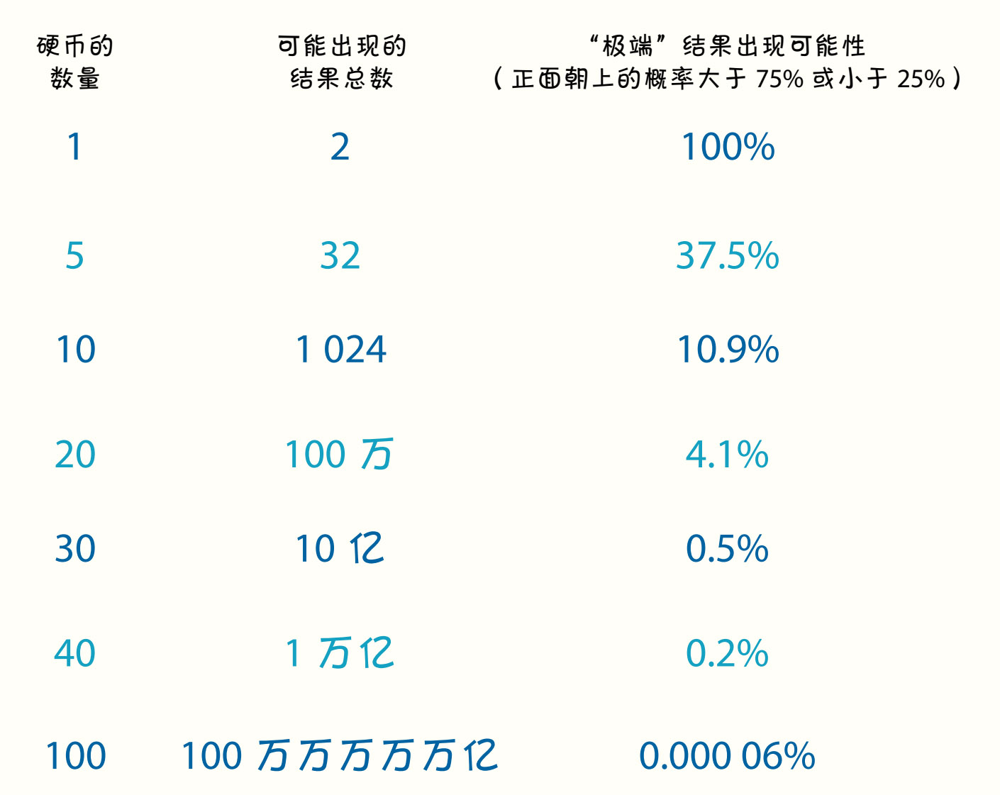
出现这一结果的原因很简单。普通的结果之所以普通，正是因为实现它们的方式很多。相较之下，极端的结果之所以极端，正是因为它们太单一，只能通过非常少的方式实现3。
当我们抛46枚硬币时，在所有的组合方式中，只有一种能够实现全部硬币正面朝上。
但是，如果你想要45个正面和1个反面，心想事成的可能性就会成倍地增加：反面朝上的硬币可以是第1枚，也可以是第2枚、第3枚、第4枚、第5枚……第46枚。一共有46种组合方式。
如果你期待的是44个正面和2个反面，那就更容易实现了。反面朝上的硬币可以是第1枚和第2枚、第1枚和第3枚、第1枚和第4枚……第1枚和第46枚，也可以是第2枚和第3枚、第2枚和第4枚、第2枚和第5枚……第45枚和第46枚，总共有1 000多种可能的组合方式。别急，这还是热身阶段呢。可能性最大的结果——23个正面朝上和23个反面朝上能以8万亿种不同的方式出现。
我不是预言家，但如果你抛了46枚硬币，我就能预测出以下情况：
1. 正面朝上的硬币为16到30枚。4
2. 你抛出的硬币顺序是独一无二的，在人类的历史上，没有任何一位抛了46枚硬币的人曾经掷过和你一样的顺序：这是万年一遇的事件，在人类历史中独一无二。
然而，不知怎的，第一点（你抛出的结果处于所有可能性的中间区域）会让人忽略了第二点（你抛出的结果史无前例）。对我们来说，硬币的顺序是可以互换的，只要那些顺序大致上平衡，我们都不会特别留意，正如我们不会特别记得暴风雪中的某一片雪花一样。
但是，如果我们还想知道这片雪花的具体结构呢？如果每枚硬币的正面和反面都对应着决定命运的路口呢？如果我们不仅要考虑有多少硬币正面朝上，还要考虑到底是哪些硬币正面朝上呢？
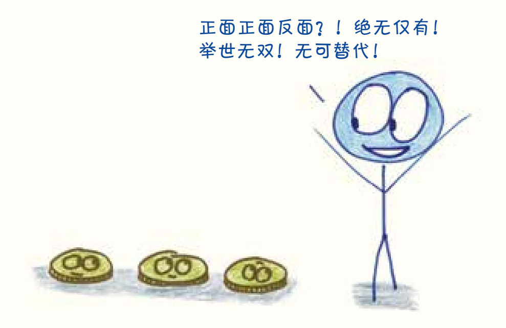
那么，在70万亿种可能的组合方式中出现的任何一种，都会让我们觉得如此不可思议，它出现的可能性是那么小，简直是一个奇迹。我们目不转睛地看着它，仿佛看着一颗星星从天而降，正好落在我们的手中。那46枚硬币是珍稀的瑰宝，珍贵得如同……一个新生的婴儿。
于是，我们要面对的就是本章开头提出的那个难题：遗传学。
我们身体里的每个细胞都含有23对染色体，你可以把它们想象成一套23卷的配方手册，你的身体就是按照这些手册构建的。每一卷手册都有两个版本：一个来自母亲，另一个来自父亲。
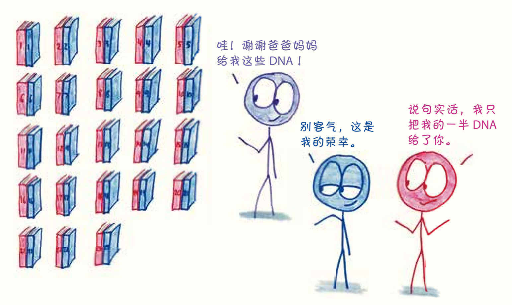
当然，你父母的体内也各有两版手册：一份复制自你的祖父/外祖父，一份复制自你的祖母/外祖母。他们如何决定把哪个版本传给你呢？好吧，我把这个过程戏剧化地简化了——他们抛了一枚硬币，正面朝上，就把祖父/外祖父的基因传给你，反面朝上，就把祖母/外祖母的基因传给你。
你的父母各重复了23次抛硬币的过程，选出了每一卷配方手册，最终得到的结果就是……你。
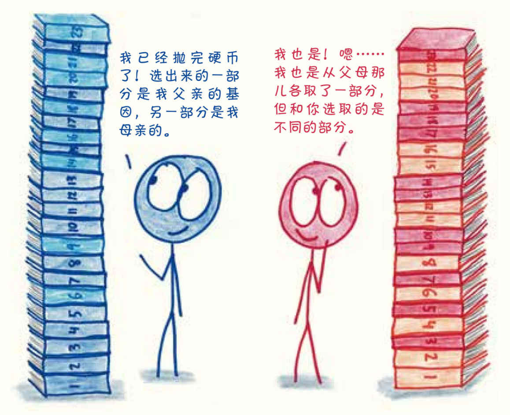
在这个简化的模型中，每对夫妇可以产生246个，也就是约70万亿个不同的孩子。与抛硬币不同的是，这里的顺序细节很重要。我遗传了母亲浓密的头发和对阅读的兴趣，遗传了父亲的步态和井井有条。如果我遗传了他们其他的特质——比如父亲的卷发和母亲的身高（或者说是母亲的小个子）——那么我就会是一个不同的人，我就变成了我的兄弟姐妹。
在基因的遗传中，“一正一反”和“一反一正”是不一样的，顺序很重要。
这个模型预测了我们会在兄弟姐妹间看到不同程度的相似性。在一种极端情况下，弟弟妹妹每次抛硬币的结果可能都和哥哥姐姐一模一样，虽然这些兄弟姐妹的出生时间相隔了好几年，但本质上和同卵双胞胎无异。
而在另一种极端情况下，弟弟妹妹抛出的硬币没有一枚结果和哥哥姐姐相同，这样的兄弟姐妹就像菲利普·K.迪克在一部惊悚小说里描绘的那样，是基因上的陌生人，他们之间的血缘关系并不比他们父母之间的血缘关系更亲密。
当然，这两种极端情况都是几乎不可能发生的。可能性更大的情况是，兄弟姐妹的23对、46条染色体中，大约有一半（也许多一点儿，也许少一点儿）是相同的。根据我们的二项分布模型，在绝大多数兄弟姐妹之间，相同的染色体有18～28条。
兄弟姐妹的相同点
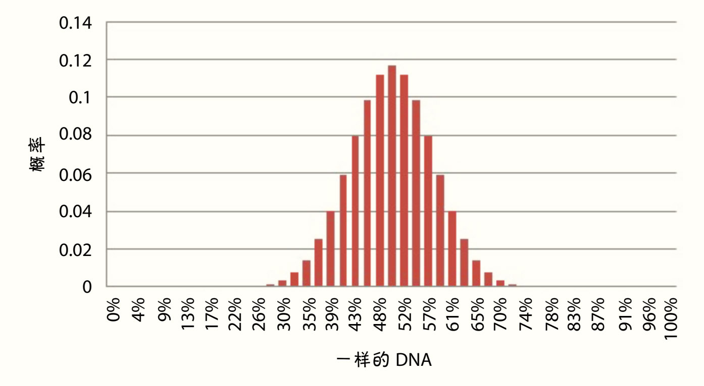
事实上，布莱恩·贝廷格（Blaine Bettinger）5在网上专栏“遗传系谱学家”（The Genetic Genealogist）中收集了近800对兄弟姐妹的数据，结果与我们的粗略预测完全吻合：
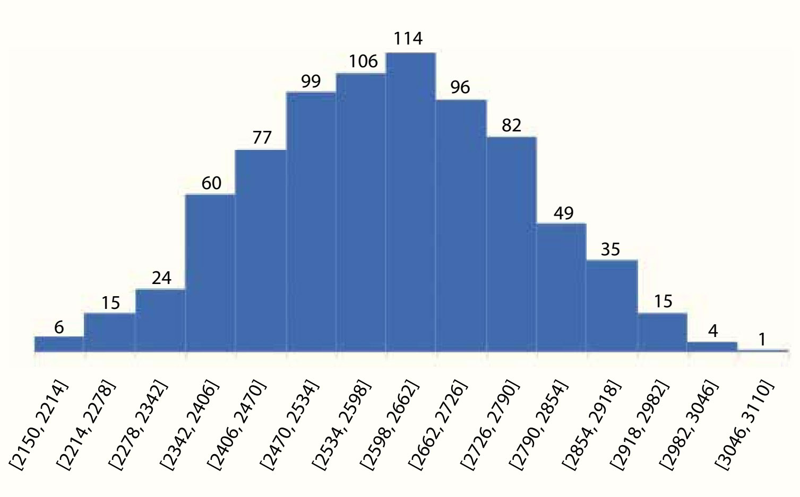
要注意的是，在以上分析中，我剔除了遗传学里一个非常重要的因素：基因互换（crossing over），也叫基因重组（recombination）。这个因素非常重要，所以如果有生物学家正在火冒三丈地撕这本书，我也没什么可埋怨的。
根据我刚才的假设，染色体在遗传过程中是完好无损的，但就像我在教生物的时候说的许多话一样，这并不准确。每对染色体在选择其中的一条进行复制之前，会发生某些部位的拼接和交换——比如，两条染色体可能会互换中间的三分之一。因此，一个父亲遗传给后代的染色体可能主要来自祖父，但它的某些片段可能来自祖母。
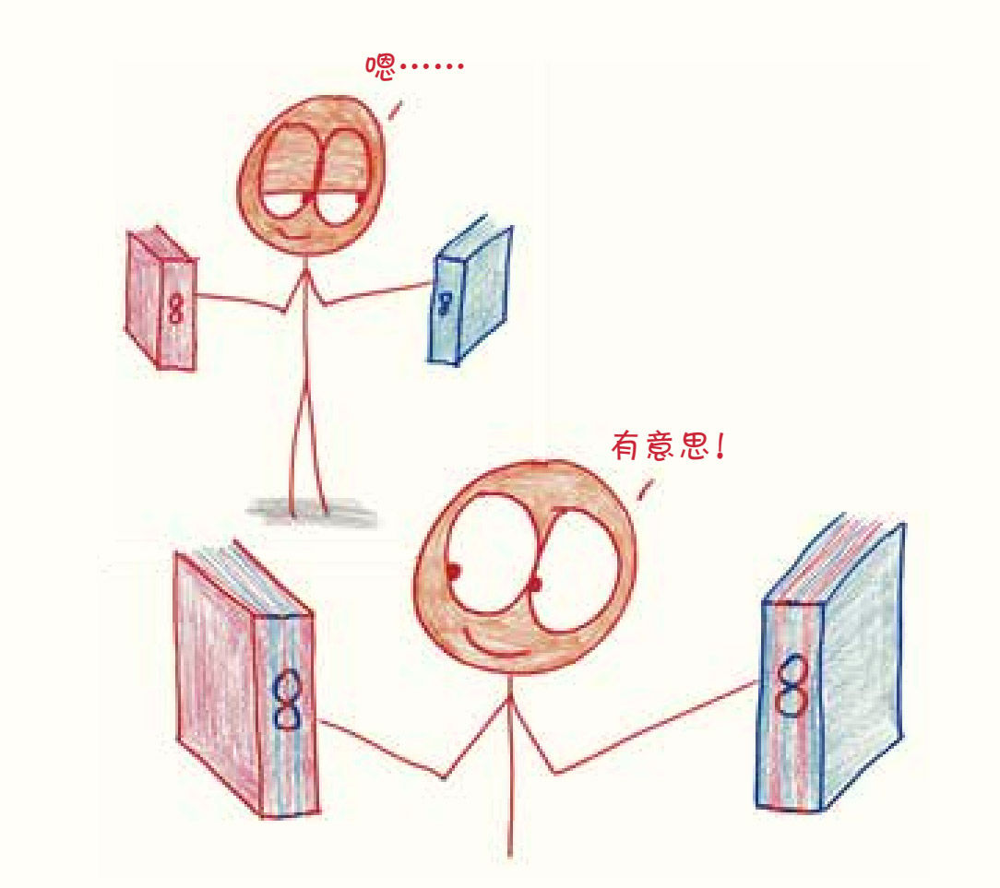
每条染色体在遗传给后代前，大约要经历两次互换6。因此，为了提高模型的准确性，我们可以将抛硬币的次数增加到3倍（因为两次互换会把一条染色体分成3段）。
这会为后代可能性的数量带来什么影响呢？记着，物体数量的线性增长可以导致它们的组合数量的指数增长。所以后代的种类数量远远大于原来的3倍。事实上，它从246（或70万亿）增长到了2138（这已经无法用汉字表达了）。
简而言之，一个新生儿和一把硬币有诸多相似之处。我当然不是让你把婴儿的生命定价为0.46美元。我是想说，你应该感叹，在不起眼的0.46美元零钱背后，隐藏着和婴儿诞生一样伟大的奇迹。
在探究家族遗传的过程中，你可能会觉得基因的遗传就像液体的混合，比如蓝色和黄色的颜料混匀后得到绿色，但它们不是这样的。家族的遗传就像一沓扑克牌，每张牌代表不同的性状特征，每个孩子的诞生都是再来一局，重新洗牌。遗传学是一场组合的游戏：兄弟姐妹之间的相像程度既有趣又捉摸不定，但都可以追溯到基因的组合爆炸。只要我们抛出足够多的硬币，那些极端的、特别的结果（全部正面朝上或全部反面朝上）就会开始模糊和混合，图表上锐利的棱角逐渐被磨平，变成像人类一般流动的状态。这样就有了我们，我们就是组合计算的结果，是游戏中的一次洗牌，是抛硬币得到的孩子。